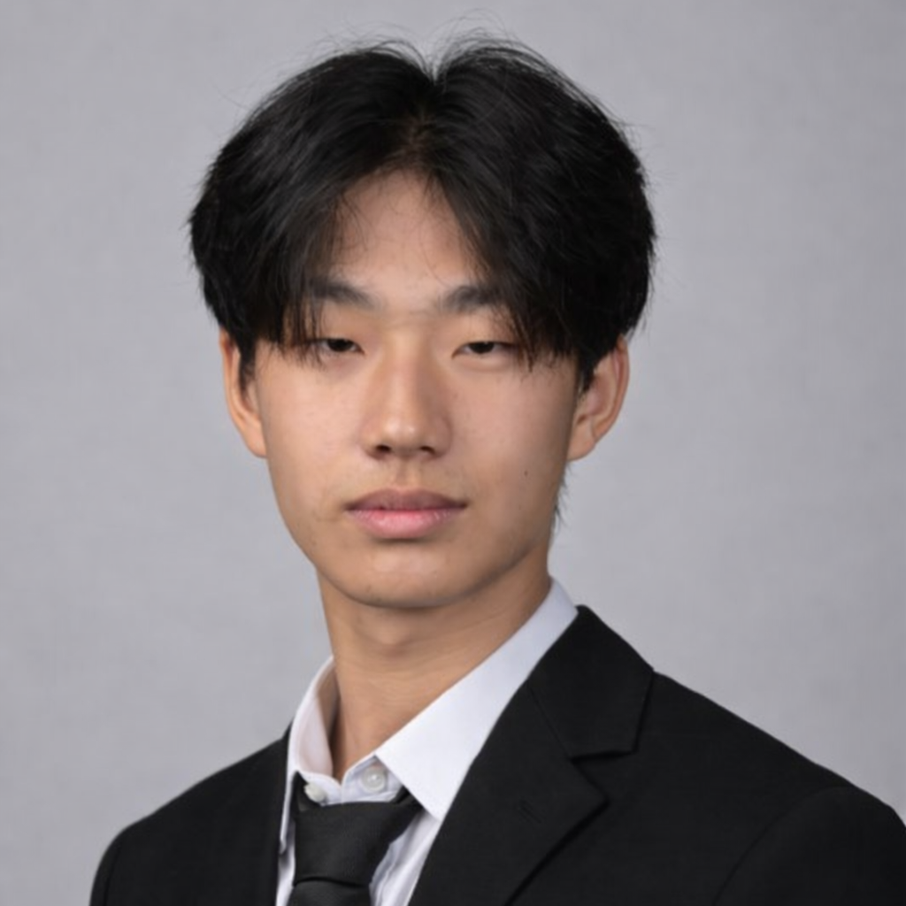

Welcome to my personal page! I'm Owen, a bachelor's student at ETH Zurich. My goal is to apply robotics to environmental issues. In my free time I enjoy playing chess and going to the gym :) Feel free to take a look around!
Relevant Coursework: Linear Algebra, Numerical Methods for CSE, Systems Programming and Computer Architecture.
IB: 41/45. Prefect, Badminton Team Member, Chess Club Captain, Project Privates Leader.
| Name | Description | Repo |
|---|---|---|
| Alpinewatch | Developing the ML detection pipeline for an early-warning system that flags Swiss slope instabilities from Synthetic Aperture Radar (InSAR) satellite data. | Private |
| TurtCrusher | A small ROS 2 game built on turtlesim. Watch Mario crush all the turts! | Here |
| Reinforcemates | Built a custom Gymnasium environment on python-chess and trained a PPO agent to checkmate from KQvK positions, reaching a 96% mate rate across randomized starting positions. | Here |
| Robot Pick-and-Place | Trained a robotic manipulation policy using Improved 3D Diffusion Policy (IDP3) to autonomously perform pick-and-place tasks from object and target locations with 60% completion rate on real bimanual robot arms. | Private |
Oops, it seems like I have no work experience yet. Hopefully that changes soon...
Planning and organizing bi-monthly chess tournaments at ETH Zürich and coordinating the club’s annual inter-university tournament against EPFL (Polychamps). Commentator for Polychamps 2026.
I think this deserves its separate section! I've been playing chess since 2015, reached an online rating of 2400 chess.com (with a sad 1835 FIDE), currently I play for DieSchulSchachProfis in the Swiss Team Championships. My goal is to reach GM one day.
You can reach me through owenguo2007[at]gmail[dot]com
My github is